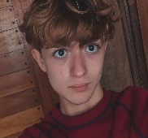
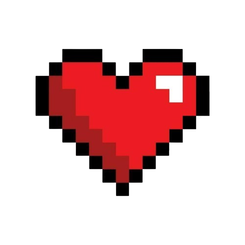
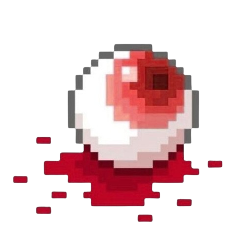
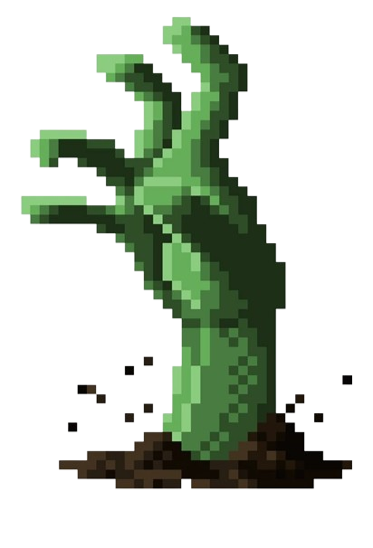
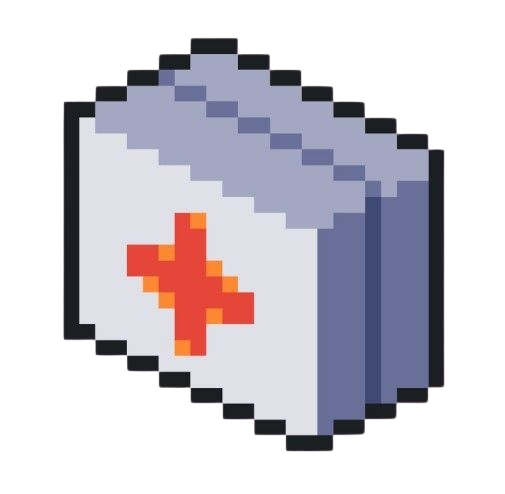

Sobre o Desenvolvedor

Olá! Eu sou o desenvolvedor de Pane Neon. Este jogo foi criado com inspiração cyberpunk, pixel art e sobrevivência em uma cidade tomada pelo caos.
O projeto foi desenvolvido para aprender e evoluir em HTML, CSS e JavaScript, misturando visual neon com ação estilo runner.
Como Jogar
Você precisa sobreviver por 150 segundos. Se o contador chegar a 0 e você ainda estiver vivo, vence. Se perder todas as vidas antes disso, perde.

Você começa com 3 vidas. Perde vida ao bater no olho ou na mão zumbi. Recupera +1 vida ao pegar o kit médico.

Olho
Obstáculo perigoso. Se encostar, você perde 1 vida e 1 ponto.

Mão Zumbi
Também causa dano. Encostar nela tira 1 vida e 1 ponto.

Kit Médico
Item de cura. Ao pegar, você ganha 1 vida e também 1 ponto.
Pontos e Fases
Quando você sobrevive, desvia dos obstáculos e se cura, ganha pontos. Se colidir com obstáculos, perde 1 ponto.
0 a 49 pontos: Fase 1
50 a 99 pontos: Fase 2
100 ou mais: Fase 3
O jogo vai ficando mais difícil, mais rápido e mais escuro com o passar do tempo.
Controles
Player 1: menino, tecla W
Player 2: menina, tecla Seta para Cima
Você pode jogar sozinho ou com 2 jogadores.